Projection period: 2026-01-01 through 2050-12-01
Boundary vintage: 31 December 2023
Weighted ensemble formula: 0.467574773035*MLR + 0.160119413816*SARIMAX + 0.154670440279*LSTM + 0.217635372871*XGBOOST
Monte Carlo draws per barangay-month: 250
Automatic outbreak rules: individual barangay threshold/probability rule, probabilistic High/Critical persistence-neighbour rule, OR a connected cluster of at least three truly adjacent barangays in the visible red projected-case zone.
Open the interactive South Cotabato map and live charts
| MUNICIPALITY_CODE | MUNICIPALITY | TOTAL_BARANGAYS | CALIBRATED_BARANGAYS |
|---|---|---|---|
| 1206302000 | Banga | 22 | 22 |
| 1206306000 | City of Koronadal | 27 | 27 |
| 1206319000 | Lake Sebu | 19 | 19 |
| 1206311000 | Norala | 14 | 14 |
| 1206312000 | Polomolok | 23 | 23 |
| 1206318000 | Santo Niño | 10 | 10 |
| 1206313000 | Surallah | 17 | 17 |
| 1206316000 | T'Boli | 25 | 25 |
| 1206314000 | Tampakan | 14 | 14 |
| 1206315000 | Tantangan | 13 | 13 |
| 1206317000 | Tupi | 15 | 15 |
| PSGC | PROVINCE | MUNICIPALITY | BARANGAY | CALIBRATION_STATUS | MEAN_OUTBREAK_PROBABILITY | MAX_OUTBREAK_PROBABILITY | MEAN_POSTERIOR_CASES | MAX_POSTERIOR_CASES | AUTOMATIC_ALERT_MONTHS | MAX_HOTSPOT_Z_SCORE |
|---|---|---|---|---|---|---|---|---|---|---|
| 1206312024 | South Cotabato | Polomolok | Cannery Site | CALIBRATED_SOUTH_COTABATO | 0.2571 | 0.3440 | 5.5107 | 6.3040 | 299 | 7.1673 |
| 1206312014 | South Cotabato | Polomolok | Poblacion | CALIBRATED_SOUTH_COTABATO | 0.2058 | 0.2840 | 6.9561 | 7.9920 | 299 | 7.5707 |
| 1206312025 | South Cotabato | Polomolok | Pagalungan | CALIBRATED_SOUTH_COTABATO | 0.3033 | 0.4000 | 2.7685 | 3.3400 | 298 | 5.7679 |
| 1206312017 | South Cotabato | Polomolok | Rubber | CALIBRATED_SOUTH_COTABATO | 0.2995 | 0.3800 | 2.7346 | 3.2760 | 276 | 3.1419 |
| 1206312016 | South Cotabato | Polomolok | Magsaysay | CALIBRATED_SOUTH_COTABATO | 0.4175 | 0.5120 | 2.5672 | 3.0960 | 268 | 6.1848 |
| 1206312003 | South Cotabato | Polomolok | Glamang | CALIBRATED_SOUTH_COTABATO | 0.2856 | 0.3840 | 2.6467 | 3.1360 | 267 | 3.5510 |
| 1206312022 | South Cotabato | Polomolok | Upper Klinan | CALIBRATED_SOUTH_COTABATO | 0.3981 | 0.4880 | 2.4404 | 2.9800 | 231 | 4.7988 |
| 1206313019 | South Cotabato | Surallah | Libertad | CALIBRATED_SOUTH_COTABATO | 0.1537 | 0.2440 | 3.0238 | 3.6560 | 229 | 3.1482 |
| 1206313003 | South Cotabato | Surallah | Centrala | CALIBRATED_SOUTH_COTABATO | 0.1297 | 0.2200 | 2.7984 | 3.4240 | 229 | 4.1937 |
| 1206313023 | South Cotabato | Surallah | Moloy | CALIBRATED_SOUTH_COTABATO | 0.1839 | 0.2760 | 2.6494 | 3.3480 | 215 | 3.8727 |
| 1206313004 | South Cotabato | Surallah | Colongulo | CALIBRATED_SOUTH_COTABATO | 0.1531 | 0.2440 | 2.4150 | 2.9960 | 197 | 3.7460 |
| 1206312007 | South Cotabato | Polomolok | Lam-Caliaf | CALIBRATED_SOUTH_COTABATO | 0.3887 | 0.4880 | 2.3974 | 2.8840 | 189 | 7.3221 |
| 1206313020 | South Cotabato | Surallah | Little Baguio | CALIBRATED_SOUTH_COTABATO | 0.1793 | 0.2760 | 2.6181 | 3.2640 | 188 | 1.9625 |
| 1206312013 | South Cotabato | Polomolok | Palkan | CALIBRATED_SOUTH_COTABATO | 0.2721 | 0.3800 | 2.5514 | 3.0840 | 178 | 2.7733 |
| 1206312019 | South Cotabato | Polomolok | Silway 8 | CALIBRATED_SOUTH_COTABATO | 0.3769 | 0.4680 | 2.3231 | 2.7800 | 140 | 7.5179 |
| 1206313006 | South Cotabato | Surallah | Duengas | CALIBRATED_SOUTH_COTABATO | 0.2378 | 0.3320 | 2.3431 | 3.0960 | 131 | 3.2390 |
| 1206313008 | South Cotabato | Surallah | Canahay | CALIBRATED_SOUTH_COTABATO | 0.1411 | 0.2560 | 2.3224 | 2.8800 | 102 | 2.8324 |
| 1206313018 | South Cotabato | Surallah | Lamsugod | CALIBRATED_SOUTH_COTABATO | 0.1512 | 0.2680 | 2.3990 | 3.0280 | 82 | 2.9917 |
| 1206313028 | South Cotabato | Surallah | Talahik | CALIBRATED_SOUTH_COTABATO | 0.2235 | 0.3360 | 2.2514 | 2.8560 | 75 | 3.4024 |
| 1206313024 | South Cotabato | Surallah | Naci | CALIBRATED_SOUTH_COTABATO | 0.2199 | 0.3320 | 2.2352 | 2.7640 | 74 | 3.0848 |
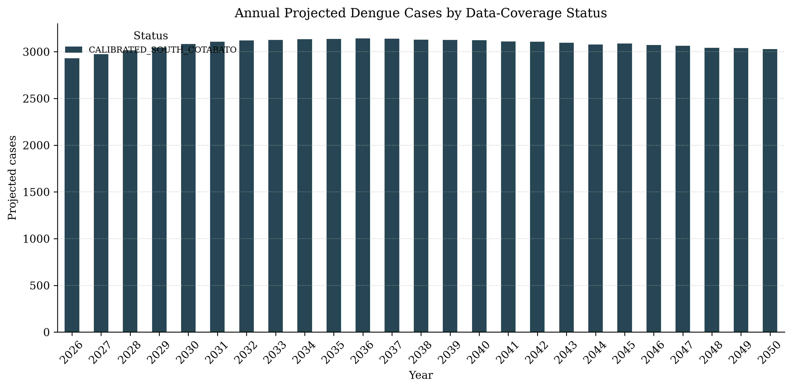
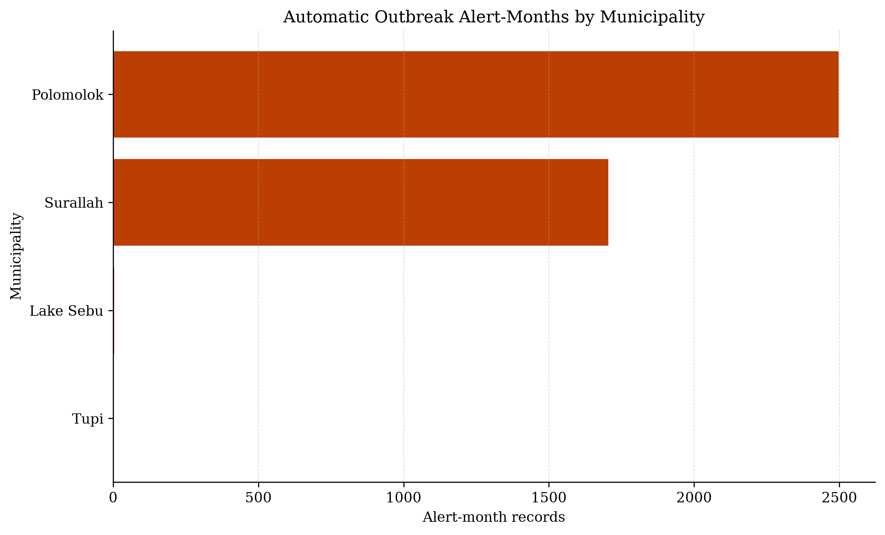
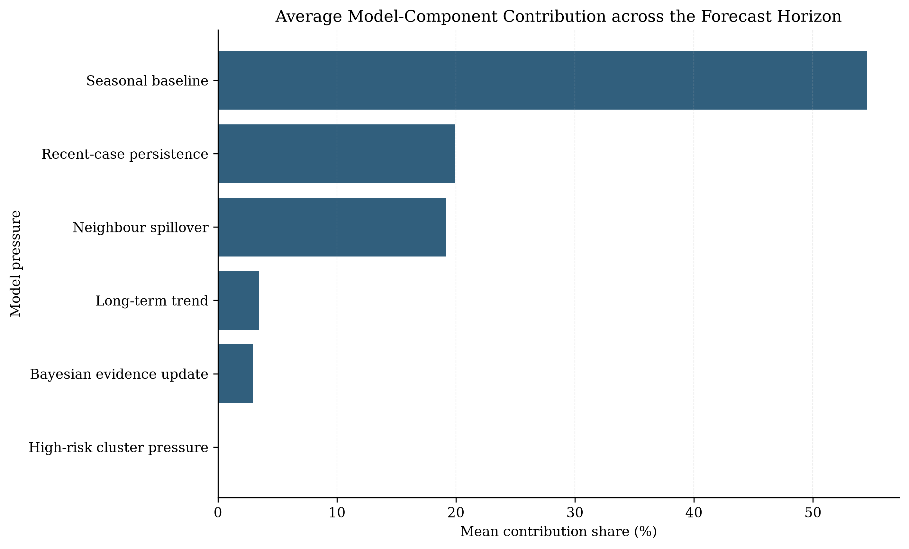
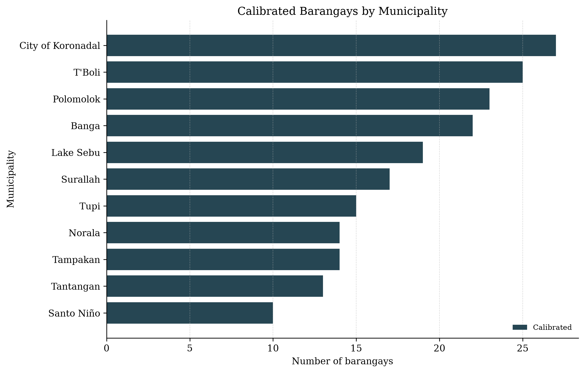
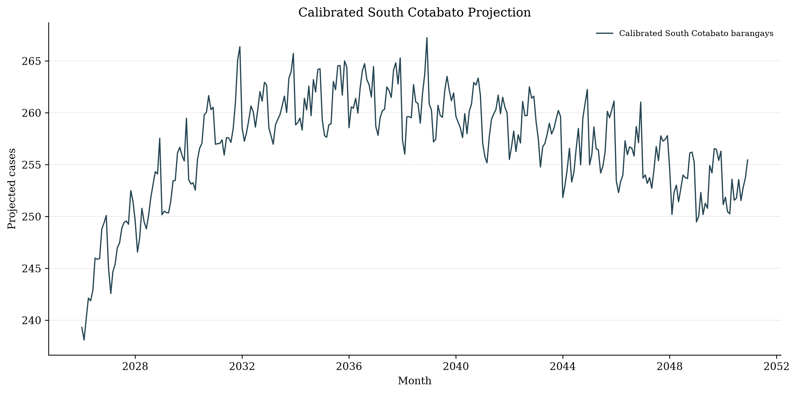
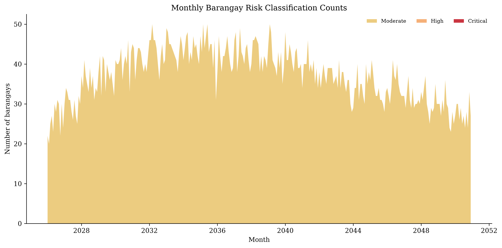
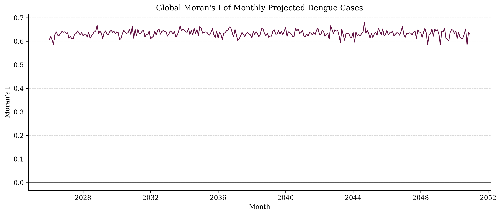
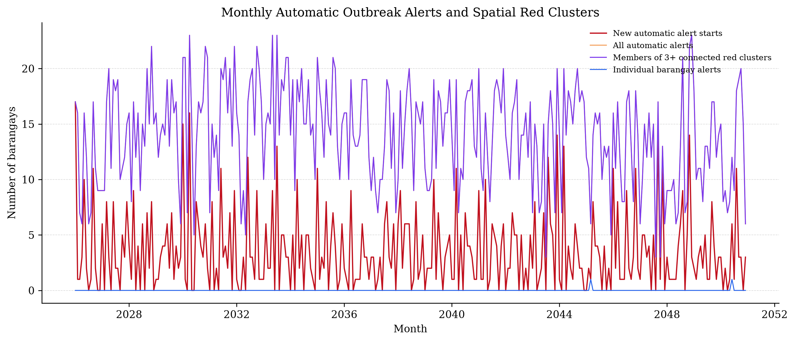
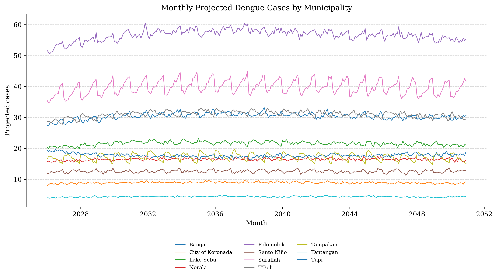
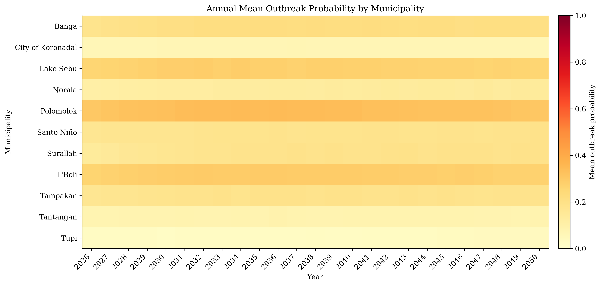
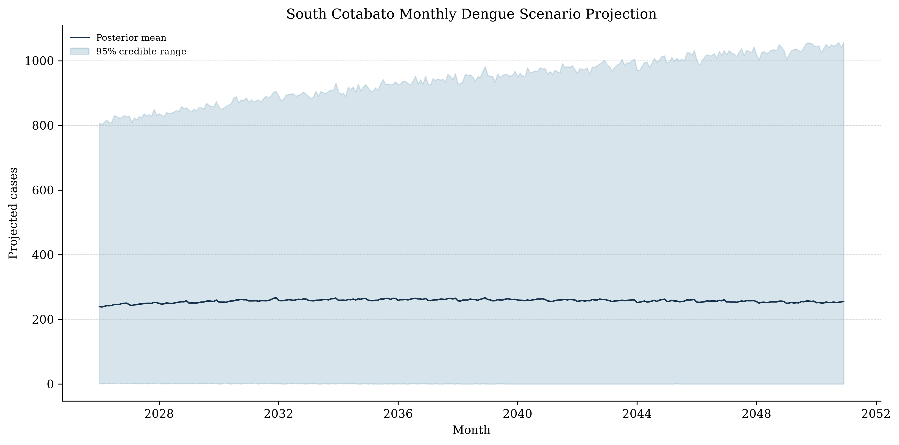
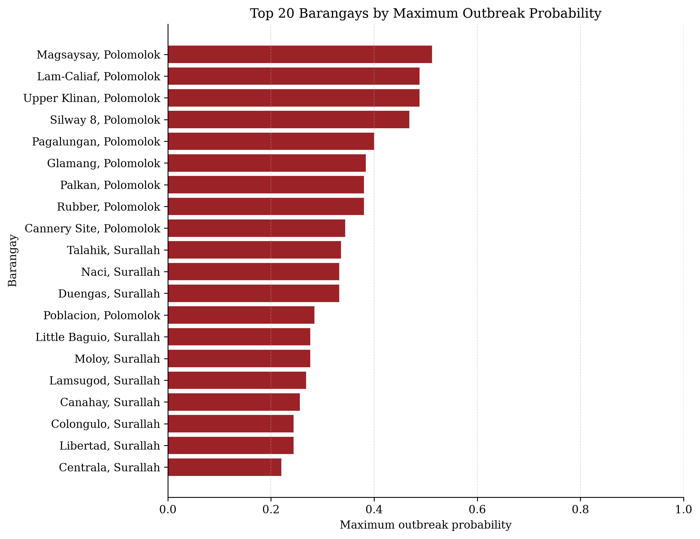
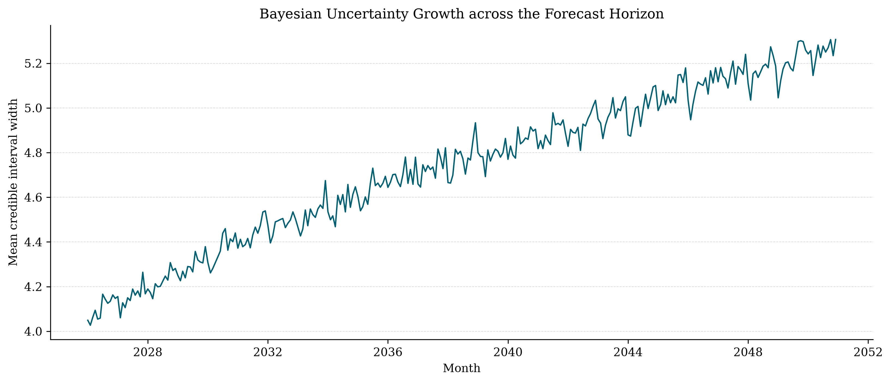
database/oraclis_spatiotemporal.sqlitetables/monthly_barangay_forecasts.csvtables/monthly_municipality_summary.csvtables/outbreak_alerts.csvtables/red_cluster_outbreak_events.csvtables/outbreak_factor_summary.csvtables/outbreak_factor_by_municipality.csvtables/spatial_adjacency_edges.csvmaps/south_cotabato_barangays_with_status.geojsonmaps/south_cotabato_municipality_boundaries.geojson